THANKS
感谢观看
感谢所有指导、陪伴与参与这个项目的人。
Within 不是单纯的 VR 展示，
而是一段关于理解、陪伴与共同前行的体验。
感谢名单
这一部分先按“指导教师、感谢机构、名单列”三类排版， 让版式更规整，也更接近正式的毕业作品致谢方式。
指导教师
指导教师姓名待补
感谢机构
学院 / 系所 / 实验室 / 展示空间待补
名单列
林舟
陈遥
周沐
许柠
宋一禾
白知远
何见山
唐予安
苏清禾
沈知夏
乔南溪
顾云舟
温若川
陆星野
方以宁
程见微
谢闻笙
江予澄
贺行之
许沐言
继续下拉，查看作者信息
PROFILE
关于本人
这一部分作为感谢页之后的补充章节，不再单独跳转。它更像是整个毕业展示的收束段， 用来说明作者的研究关注、创作方法与这次项目背后的个人立场。
创作者个人信息

个人照片占位：后续可直接替换为你的正式照片，建议使用竖向人像图。
黄苏博
艺术与科技
231612057
毕业创作《Within · 协作同行》作者
创作说明
《Within》并不是单纯展示某种技术能力，而是一次围绕“如何让社交数字化设计真正触及现实困境”的尝试。 我希望这个作品既具有研究支撑，也具有情感温度，让体验者在进入虚拟场景时，不只是完成任务， 而是逐步理解陪伴、协作和共同前行的意义。
简单履历
艺术与科技专业在读，持续关注 XR 叙事、交互体验与数字化社交设计。
研究方向
聚焦具身认知、大学生社交困境与虚拟场景中的陪伴式体验建构。
作品展示

主作品图占位：建议替换为最能代表你个人创作方向的一张完整作品大图，例如毕业设计海报、展览现场总览或最终成片截图。
补充作品图 01：可替换为个人其他作品、系列海报或阶段成果图。

补充作品图 02：可继续扩展更多作品，用于形成更完整的个人作品带。
作品展示单独放在下方，和上面的信息容器保持同宽。现在先用项目内现有图像占位，后续可以继续扩成多张作品展示。

Within · 协作同行 ｜ 愿每一段旅程都有人同行